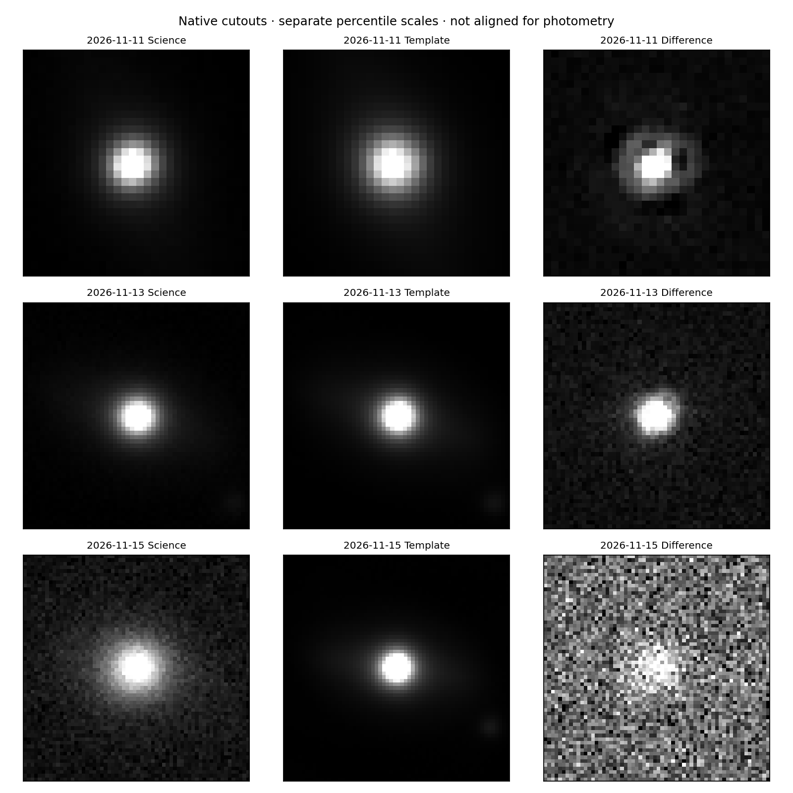

# Science/reference investigation Generated 2026-11-20T15:25:32.654401+00:00 Existing alert measurements only. New observing data are not required for this review. ## 171141216913588260 · i band | UTC | Detector | Science nJy | Template nJy | Difference nJy | PSF trace (native units) | True flags | |---|---:|---:|---:|---:|---:|---| | 2026-10-30T03:16:02.015 | 18 | 790,853 | 714,844 | 74,345 | 0.39654477 | none returned true | | 2026-10-30T07:11:26.749 | 163 | 769,556 | 684,914 | 82,647 | 0.27426384 | none returned true | | 2026-11-09T05:46:19.880 | 165 | 801,708 | 690,710 | 107,431 | 0.26876284 | none returned true | | 2026-11-11T05:39:57.427 | 178 | 787,642 | 682,856 | 101,592 | 0.2499886 | none returned true | | 2026-11-13T05:39:41.532 | 160 | 892,683 | 787,698 | 101,571 | 0.47264568 | none returned true | | 2026-11-15T05:31:12.579 | 121 | 1,168,054 | 1,058,652 | 99,608 | 1.9154995000000001 | none returned true | PSF trace is a descriptive shape proxy in returned native units, not a calibrated seeing measurement. Missing or false flags do not certify photometric validity. ## 313862200773574662 · i band | UTC | Detector | Science nJy | Template nJy | Difference nJy | PSF trace (native units) | True flags | |---|---:|---:|---:|---:|---:|---| | 2026-10-30T03:26:30.352 | 105 | 142,144 | 75,478 | 65,726 | 0.43235415 | none returned true | | 2026-10-30T03:26:49.902 | 105 | 140,338 | 74,545 | 64,744 | 0.39303885 | none returned true | | 2026-11-05T05:29:01.045 | 61 | 149,513 | 82,541 | 64,593 | 0.7472881 | none returned true | | 2026-11-09T05:14:13.121 | 57 | 140,807 | 74,421 | 64,265 | 0.28969771 | none returned true | | 2026-11-11T05:59:37.241 | 53 | 137,429 | 72,690 | 62,952 | 0.24842980999999997 | none returned true | | 2026-11-13T05:30:11.907 | 50 | 142,193 | 76,359 | 63,948 | 0.39548954000000003 | none returned true | | 2026-11-15T05:33:18.561 | 100 | 159,006 | 91,467 | 63,040 | 1.43818176 | none returned true | PSF trace is a descriptive shape proxy in returned native units, not a calibrated seeing measurement. Missing or false flags do not certify photometric validity. ## PGC November 11 → November 15 Science change +380,412 nJy; template change +375,796 nJy; difference change -1,984 nJy. The template measurement changes almost as much as the science measurement. This motivates reference/measurement/calibration review. It does not establish which effect caused the change. Measurements on science and template share fitting context and are not independent flare confirmations. ## PSF and reference metadata comparison | Object | PSF trace Nov 11 | Nov 13 | Nov 15 | Nov 15 / Nov 11 | Same reported template date summary? | |---|---:|---:|---:|---:|---| | 171141216913588260 | 0.249989 | 0.472646 | 1.915500 | 7.662 | True | | 313862200773574662 | 0.248430 | 0.395490 | 1.438182 | 5.789 | True | The reported PSF trace increases alongside science/template flux in both objects. This supports investigating image quality and forced-PSF measurement effects. The three matching template date summaries do not prove identical coadd pixels, weights, detector projection or photometric fitting. A detector ID alone does not establish a cause. ## Image retrieval 9 of 9 requested FITS cutouts retrieved and parsed. Contact sheet, when present, uses native pixel orientation and independent percentile stretches. It cannot establish a brightness trend, and images have not been aligned, PSF-matched or photometrically recalibrated. FITS extension names, uncertainty types and WCS CTYPE presence are recorded per cutout. Missing CTYPE keywords require resolving the documented WCS/orientation issue before cross-visit sky alignment. Mask bits require their actual definitions; a nonzero mask value is not automatically a bad pixel. ## Remaining interpretation gates Check FITS WCS/units, variance and masks, confirm usable template provenance, align sky coordinates and compare with PSF-matched or aperture-consistent measurements. Inspect neighboring objects and extended host light. Do not treat detector changes alone as a demonstrated cause. Photometry documentation: https://doc.lsst.fink-broker.org/data/photometry/ Cutout documentation: https://doc.lsst.fink-broker.org/services/api/imagesearch/
